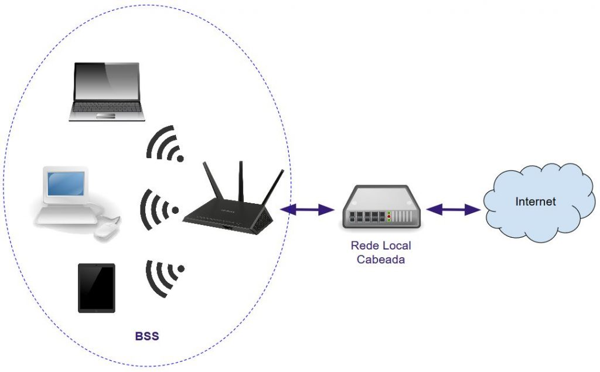

Provavelmente você já ouviu algumas dessas frases: "Vou montar uma rede wireless em meu escritório", "você tem a senha do Wi-Fi", "aqui temos acesso à internet via WiMAX", "preciso comprar um roteador wireless mais potente", "entro na WLAN, conecto à WMAN e acesso a internet". Isso são todos termos técnicos do mundo das redes sem fio, alguns tem suas semelhanças.
Basicamente, essas são as peculiariedades deles:
Alguns tipos de redes wireless são o Bluetooth, Wi-Fi, rádio (AM/ FM), satélite (como GPS), ZigBee, LTE, Li-Fi, UMTS e WiMAX.
Atualmente, a rede WLAN padrão é a rede baseada nos padrões IEEE 802.11, também chamada de Wi-Fi. Outros tipos já existiram, como a HiperLAN.
Wi-Fi é marca registrada da Wi-Fi Alliance, que restringe o uso da expressão Wi-Fi Certified a produtos que passaram em teste de certificação de interopelabilidade. As redes Wi-Fi são padronizadas como IEEE 802.11, com várias revisões (a, b, g, n, etc.), cada uma com características tecnológicas específicas.
Uma diferença entre o padrão WiMAX e o Wi-Fi é o raio de alcance de cada rede. O WiMAX foi projetado para uso em redes de área metropolitana sem fio (WMAN), cobrindo em torno de 50 Km de área com sinal. Wi-Fi é usado em ambientes privados em áreas restritas, tem alcance máximo de poucas centenas de metros.
As aplicações do WiMAX são: Fornecer conectividade móvel de banda larga em e entre cidades, alternativa sem fios aos serviços de cabo e DSL para acesso banda larga de última milha, fornecer serviços de VoIP e IPTV em conjunto com dados (Triple Play), entre outros.
Temos várias ferramentas para analisarmos o ambiente Wi-Fi ao redor.
No Android temos para isso o aplicativo Wi-FI Analyzer Classic, que permite nós visualizarmos quais redes Wi-Fi estão próximas, qual está com a onda mais alta, quais canais elas estão e se alguma rede está sobrepondo outra (o que causa interferência na transmissão de dados).
No Windows, em computadores com placa de rede Wi-Fi, podemos usar o Xirrus para analisar a rede Wi-Fi, e ele pode ser baixado aqui: https://www.techspot.com/downloads/6901-xirrus-wifi-inspector.html
Caso esteja utilizando o Linux, instale o LinSSID, digitando esses comandos:
sudo add-apt-repository ppa:wseverin/ppa
sudo apt-get update
sudo apt-get install linssid
Alguns roteadores costumam mudar de canal para conseguir uma transmissão melhor e sem interferências. Nessa situação ele desconecta todos os dispositivos e os reconecta ao achar um canal livre.
No seu navegador, acesse o IP do seu roteador (indo em ipconfig, no caso do Windows, e pegando o endereço do gateway padrão), como por exemplo 192.168.15.1.
Na tela de login, acesse usando o login e senha padrões (que é recomendado serem mudados posteriormente). É recomendado também mudar os nomes e senha da rede wi-fi.
Toda rede wi-fi possui um protocolo de segurança, que define sua senha e a criptografa. Prefira os protocolos WPA3 ou WPA2, evite o protocolo WEP, que é mais vulnerável.
Apesar da função WPS ser útil para conectar um dispositivo a rede wi-fi, ele também tem vulnerabilidades, pois facilita o acesso a invasores na rede, e por isso é recomendado desativá-lo.
Procure também atualizações para o firmware do seu roteador.
Para que alguns programas funcionem corretamente, é necessário deixar algumas portas abertas no roteador, no entanto, quando elas não estão em uso, é recomendado fechá-las para não serem exploradas por invasores.
O problema do nó oculto ocorre quando estações em uma BSS estão distantes entre si, e não se enxergam, apesar de enxergarem o AP. Pode ocasionar a tentativa de transmissão simultânea de pacotes, levando a colisões. Impacta negativamente a performance da rede sem fio. Pode ser resolvido com o emprego do mecanismo RTS/CTS.
Sobre o mecanismo RTS/CTS:
Operação do RTS/CTS:
O quadro RTS (20 bytes) contém cinco campos, que são:
Já um quadro CTS (14 bytes) possui quatro campos:
Existem, basicamente, três modos possíveis de configuração do mecanismo RTS/CTS:
Threshold: É possível controlar quais pacotes, acima de um certo tamanho determinado por um limite (threshold), são anunciados pelo mecanismo para envio pelas estações.
Esses são os problemas do nó exposto:
E tem essas dicas:
Ao configurar uma rede Wi-Fi, é importante escolher uma boa chave de criptografia para garantir a segurança dos dados. O WPA e WPA2 são os protocolos mais usados para evitar o acesso de cibercriminosos, que podem coletar informações para atividades ilegais ou instalar malwares.
Lançado em 2003, o WPA resolve diversas vulnerabilidades do seu antecessor, o WEP. Esse protocolo é mais seguro porque usa uma chave de 256 bits para criptografia, representando uma grande melhoria com relação às chaves de 64 e 128 bits do padrão anterior.
Outra característica do WPA é o Temporal Key Integrity Protocol (TKIP), responsável por gerar dinamicamente uma nova chave para cada pacote ou unidade de dados, sendo mais seguro que o sistema de chave fixa do WEP. No entanto, esse padrão ainda entrega um baixo nível de segurança.
A WiFi Alliance, organização que estabelece os protocolos de Wi-Fi, precisou manter alguns elementos do WEP para que dispositivos antigos fossem compatíveis. Por conta disso, o WPA tem brechas que podem ser exploradas com certa facilidade.
Para resolver os problemas, a organização apresentou o protocolo WPA2 em 2004. O novo padrão é mais fácil de configurar e entrega um sistema de segurança mais complexo. A grande diferença está no Advanced Encryption Standard (AES), que substituiu o TKIP.
Essa tecnologia melhorou o nível de segurança ao ponto de ser usada para proteger informações governamentais. Ou seja, o WPA2 fornece uma criptografia forte. No entanto, ele tem uma vulnerabilidade crítica: se uma pessoa não autorizada conseguir acessar à rede, ela pode atacar outros dispositivos conectados.
O WPA3 foi lançado em 2018 para corrigir as vulnerabilidades das versões anteriores. Ele traz um sistema de criptografia chamado Perfect Forward Secrecy e uma série de melhorias, como novos recursos para simplificar a segurança, autenticação mais robusta e maior força criptográfica.
No entanto, esse padrão ainda não foi amplamente adotado. Há roteadores com WPA3 no mercado, mas eles costumam ser mais caros. Além disso, apesar das fabricantes disponibilizarem a atualização que entrega o novo protocolo, nem todos os modelos vendidos oficialmente têm um hardware capaz de suportá-lo. Em outras palavras, o WPA3 não é uma opção para a maioria das pessoas, pelo menos por enquanto.